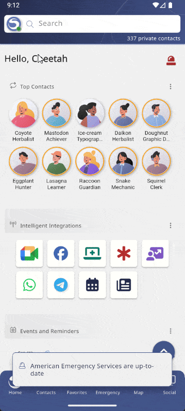

Delete Your Saropa Contacts Account and Data
To permanently delete your Saropa Contacts account, you must first delete the account from our servers using the app, and then remove the app from your device. This is a permanent and irreversible process.
Step 1: Delete Your Account From Our Servers
This must be done from within the Saropa Contacts app to verify your identity before deletion.
- Open the Saropa Contacts app on your device.
- Navigate to your Account screen.
- Open the Menu (often represented by three dots or three lines ).
- Select the 'Delete Account' option from the menu.
- A confirmation screen will appear. To proceed, you must confirm the deletion by tapping the button labeled 'Permanently Delete'. Please be aware that this action cannot be undone.
- After your account is deleted, please Log Out of the application.

Step 2: Remove the App and Local Data From Your Device
After deleting your account from our servers, you should also remove the application from your phone or tablet to delete any cached data.
For iOS (iPhone/iPad):
- Find the Saropa Contacts app icon on your Home Screen.
- Press and hold the app icon until a menu appears.
- Tap Remove App, then confirm by tapping Delete App.
For Android:
- Open your device's Settings app.
- Navigate to
Apps > See all apps and find Saropa Contacts in the list.
- On the app info page, tap on Storage & cache.
- Tap Clear storage to permanently delete all app data. Alternatively, you can simply uninstall the app.
For more information on our data practices, please see our:
Privacy Policy •
GDPR Information
If you have any questions or encounter issues, please contact our support team at:
delete.account@saropa.com.